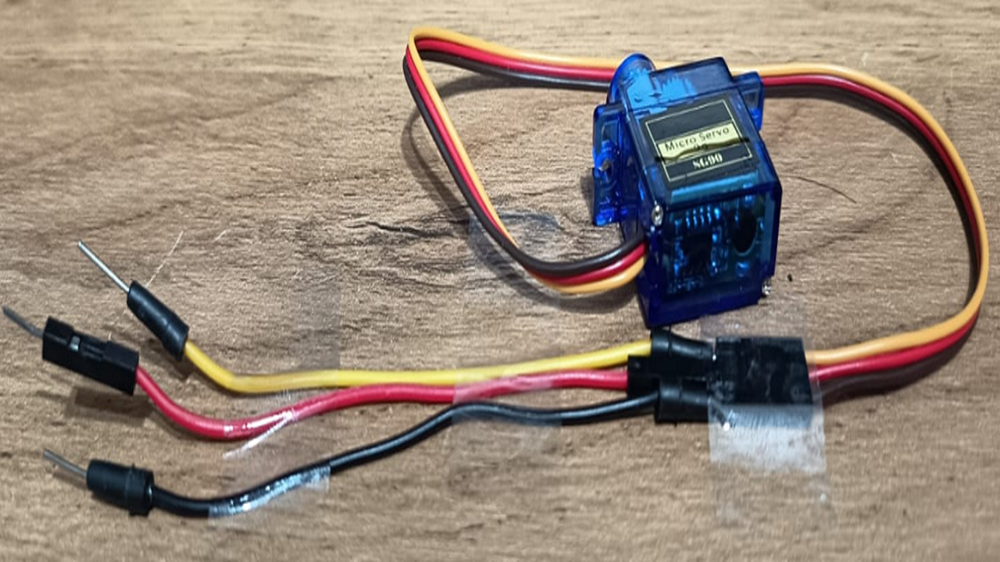
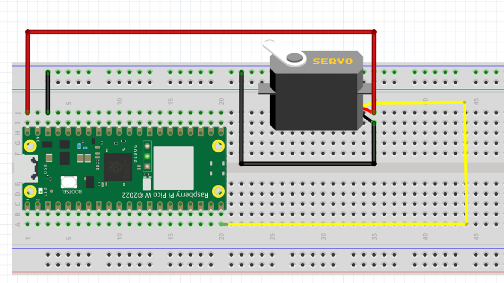

The SG90 is an analog servo that moves its output shaft to a specific angle based on a PWM signal. Unlike a DC motor, it maintains its position as long as the signal is provided.
Pin Connections
Orange: GP15 (Signal)
Red: VBUS (5V Power)
Brown: GND (Ground)
SIMULATION: 0°
Wiring Connections
Jumper Wire Bridge
Connecting the servo's female plug to a breadboard is done using Male-to-Male jumper wires.
Ensure the metal tips seat firmly in the socket.
Use color-coded wires (Orange, Red, Brown/Black).
The image shows the proper "bridge" technique.

Wiring & Code

from machine import Pin, PWM
import utime
# Setup PWM on GP15
servo = PWM(Pin(15))
servo.freq(50) # 50Hz = 20ms period
def set_servo_angle(angle):
# duty = percentage of arc * range + offset
duty = int(((angle / 180) * 6554) + 1638)
servo.duty_u16(duty)
while True:
for target in [0, 45, 90, 135, 180]:
set_servo_angle(target)
utime.sleep(1)
The Math Behind the Signal (duty)
Why 65,535?
The Pico uses 16-bit PWM resolution. A 16-bit number ranges from 0 to 65,535 is (2^16) - 1.